Akciós könyveink
Vidd el őket akár 20% kedvezménnyel!

George Orwell - 1984
Winston Smith élete egy totalitárius államban zajlik, ahol minden pillanatról figyelik, és a valóságot az állam alakítja át. A Nagy Testvér mindent irányít, és mindenkit manipulál. Winston megpróbál ellenszegülni az elnyomásnak, de a rendszer kegyetlen és könyörtelen.

J.K. Rowling – Harry Potter
Harry Potter egy fiatal fiú, aki megtudja, hogy ő egy varázsló, és egy varázslóiskolába, a Roxfortba kerül. Itt barátokra talál, miközben egy titkot is felfedez: egy sötét varázsló, Voldemort, aki egykor megölte szüleit, még mindig él.

Margaret Atwood – A szolgálólány meséje
A regény egy disztópikus jövőben játszódik, ahol a nők jogai teljesen elnyomottá váltak, és csak a szaporodásra alkalmas nőket, az úgynevezett "szolgálólányokat" tartják meg. A főszereplő, Offred, egy ilyen szolgálólány, aki megpróbálja visszaszerezni szabadságát.
Könyvkínálatunk
Homérosz - Odüsszeai
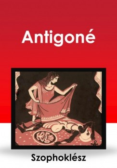A Trója ostroma után tíz évet bolyongó Odüsszeusz története a világirodalom egyik legnagyobb hőseposza. Homérosz klasszikus művében a ravasz ithakai király hazafelé tart, de útját istenek haragja, szörnyetegek, csábító nymphák és varázslatok szegélyezik.
Homérosz – Iliász
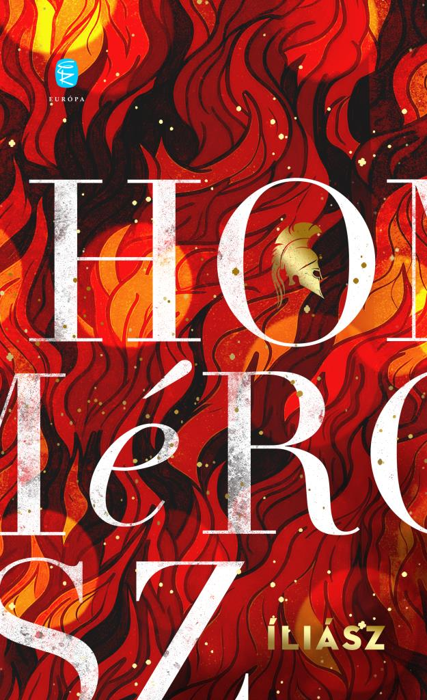A trójai háború hősei, istenei és szenvedései elevenednek meg ebben az időtlen eposzban. Akhilleusz haragja és Hektór bátorsága örökre meghatározták, mit jelent hőssé válni. Az Iliász nemcsak a háborúról szól – hanem az emberi lélek küzdelmeiről is.
Szophoklész – Antigoné
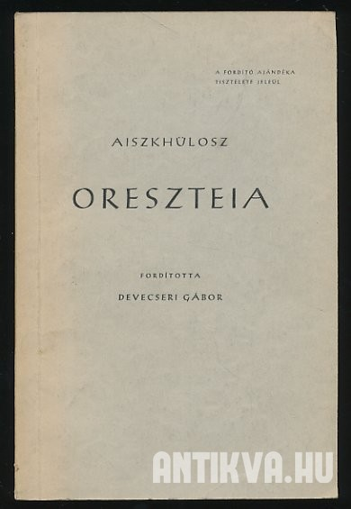Antigoné, aki szembeszáll a királyi törvénnyel, hogy testvérét méltó módon eltemethesse, a családi kötelesség és az állami törvények közötti konfliktust testesíti meg.
Euripidész – Médeia
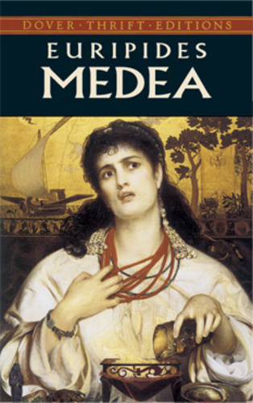Euripidész híres tragédiája, amelyben a boszú és a csalódás ereje elpusztítja a boldogságot, amelyet Medeia és Jázón együtt építettek. A mű elgondolkodtat a szerelem, a becsület és az igazság kérdéseiről, miközben a fájdalom és az elhagyatottság szörnyű következményeit mutatja be.
Aiszkhülosz – Oreszteia
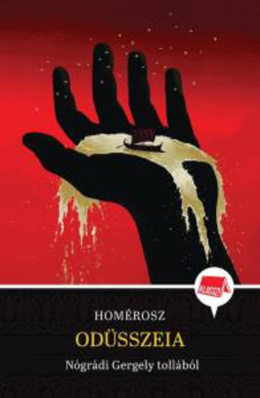Az Oreszteia trilógiájában Aiszkhülosz a családi bosszú örök körforgását és az igazságosság keresését tárja elénk. Oresztész, az elátkozott család sarja, aki apja meggyilkolásáért áll bosszút, miközben az istenek és a társadalom igazságérzete összecsap. Az Oreszteia az emberi és isteni törvények határvonalát kutatja.
Platón – Az állam

Platón híres műve az ideális állam és az igazságos társadalom elméletét tárgyalja. Szókratész dialógusai révén Platón olyan filozófiai alapelveket vizsgál, mint az igazság, a tudás és a politikai vezetés. Az Állam nem csupán egy politikai utópia, hanem az egyéni erkölcs és a közjó kapcsolatát is elemzi.
Arisztotelész – Nikomakhoszi etika
Arisztotelész etikai műve az erények és a boldog élet elérésének kérdését feszegeti. A Nikomakhoszi etika arra keresi a választ, hogyan élhetünk jó életet, és hogyan érhetjük el a legnagyobb boldogságot az erények gyakorlásával. A filozófia alapműve, amely az emberi cselekedetek morális alapjait vizsgálja.
Epiktétosz – Kézikönyvecske

Epiktétosz Kézikönyvecskéje a stoikus filozófia gyakorlati útmutatója, amely a belső nyugalom és a külső körülményekkel való harmónia elérésére tanít. Az önuralom, az élet elfogadása és a sors iránti tisztelet az alapelvek, amelyek segítenek a boldog és tartalmas élet megélésében.
Szeneka – Az élet rövidségéről
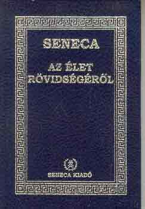Szeneka híres értekezésében az élet rövidségét és annak helyes kihasználását tárgyalja. A Az élet rövidségéről arra figyelmeztet, hogy az emberek túl sok időt pazarolnak haszontalan dolgokra, és arra ösztönöz, hogy minden pillanatot tudatosan éljünk meg, hogy a valódi értékekre összpontosíthassunk.
Marcus Aurelius – Elmélkedések
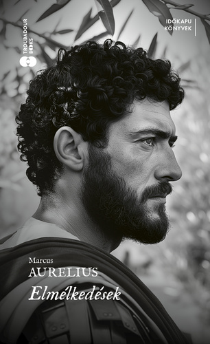Marcus Aurelius Elmélkedései a római császár személyes naplójának részletei, melyekben a stoikus filozófia elveit alkalmazza mindennapi életére. A mű segít megérteni a belső béke és erő megtalálásának titkát, miközben a császár a filozófia útján keres válaszokat az élet kihívásaira és a személyes fejlődésre.
Hérodotosz – A történetírás
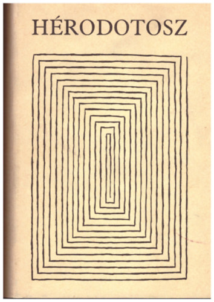Hérodotosz, az "történetírás atyja", az A történetírás című művében először próbálja meg összefoglalni és rendszerezni a világ eseményeit, különös figyelmet fordítva a háborúkra és azok emberi vonatkozásaira. A mű nemcsak egy-egy történelmi eseményt örökít meg, hanem bemutatja a különböző népek szokásait, kultúráit és hitvilágát, így alapvető fontosságú mű a történelemkutatás számára.
Thuküdidész – A peloponnészoszi háború története
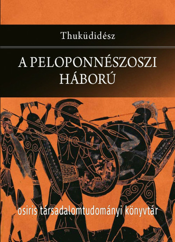Thuküdidész műve az ókori Görögország egyik legfontosabb történelmi feljegyzése, amely részletesen bemutatja a Peloponnészoszi háború küzdelmeit, okait és következményeit. A mű rendkívüli pontossággal és mély filozófiai elemzéssel dolgozza fel a háborút, és arra összpontosít, hogy miként formálják a politikai és emberi döntések a történelem menetét.
Edith Hall – Introducing the Ancient Greeks

Edith Hall könyve kiváló bevezető az ókori görög világba, amely megismerteti az olvasót a görög kultúra, filozófia, vallás és társadalom alapjaival. A mű átfogó képet ad a görög civilizáció fontosságáról és hatásáról, valamint betekintést nyújt abba, hogy miért tekintjük őket az európai kultúra alapítóiként.
Mary Beard – SPQR
Mary Beard SPQR című műve a római köztársaság és a birodalom történelmét tárgyalja, de az ókori görög világra is kiható jelentősége van, mivel a rómaiak erőteljesen építettek a görög kultúrára. Beard bemutatja a római politika, társadalom és kultúra fejlődését, és azt, hogy a görög hatások hogyan formálták a római világot. Az olvasó megismerheti a római civilizáció különböző aspektusait és azt, hogyan lett a Római Birodalom a görög örökség örököse.
Tom Holland – Persian Fire
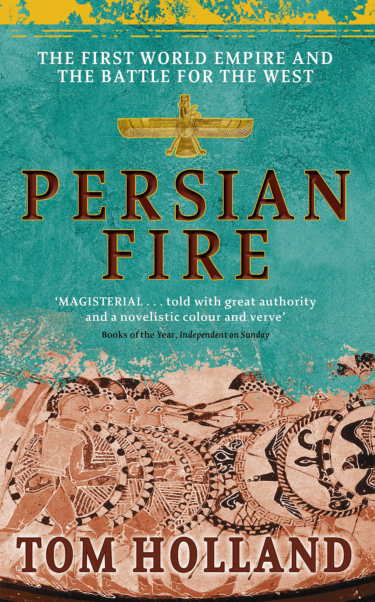Persian Fire a görög-perzsa háborúk történetét tárgyalja, amely kulcsfontosságú pillanata volt az ókori történelemnek. Tom Holland izgalmas és részletes írása a két civilizáció összecsapásának eseményeit és annak hosszú távú következményeit vizsgálja. A mű nemcsak a háborúkat és csatákat mutatja be, hanem azok kulturális, politikai és katonai hatásait is, miközben betekintést ad a görög és perzsa világok különbözőségeibe.
Nikosz Kazantzakisz – Zorbász, a görög
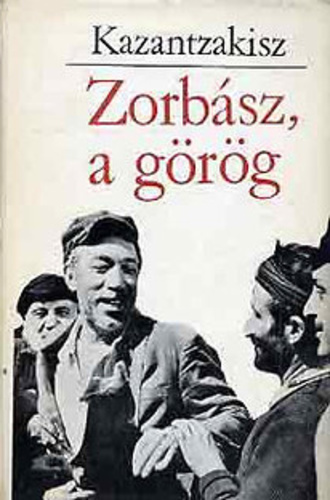Kazantzakisz világhírű regénye, Zorbász, a görög egy különc, életigenlő férfi, Zorbász történetét meséli el, aki mindenben a szabadságot és az élet örömeit keresi. A mű a görög lélek mélységeit és szépségét tárja elénk, miközben filozófiai kérdéseket is felvet az emberi sorsról, boldogságról és kiteljesedésről. Zorbász figurája örök szimbóluma a szabadság vágynak, és az élet igazi élvezetére való törekvésnek.
Nikosz Kazantzakisz – Akinek meg kell halnia
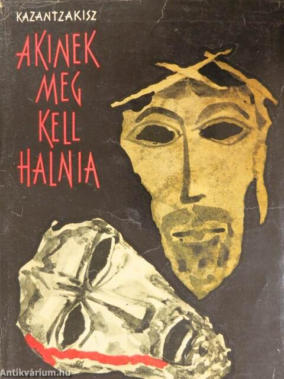Akinek meg kell halnia Kazantzakisz másik kiemelkedő műve, amely az emberi szenvedés és a halál kérdéseit vizsgálja. A regényben a főszereplő egy kis görög faluban él, ahol szembe kell néznie a családja és a közösség elvárásaival, miközben a saját belső vívódásaival is küzd. A mű mélyen foglalkozik a sors, az élet és a halál filozófiai aspektusaival, miközben egy erőteljes személyes történetet mesél el.
Vassilis Alexakis – Idegen szavak szótára
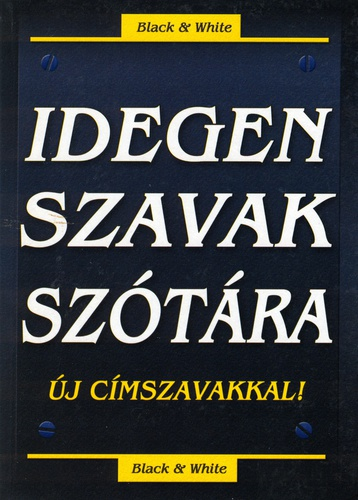Vassilis Alexakis Idegen szavak szótára című regénye az identitás, a nyelv és az elidegenedés témáját boncolgatja. A könyv egy fiatal görög férfi történetét meséli el, aki külföldön próbálja megtalálni helyét a világban. A mű egyszerre szórakoztató és filozofikus, miközben a kultúrák közötti különbségek és az otthontalanság érzésének pszichológiai hatásait is tárgyalja.
Petros Markaris – Bérgyilkosok esernyővel (krimi)
Petros Markaris Bérgyilkosok esernyővel című krimije a modern görög társadalom bűnügyi világát tárja elénk. A műben a híres detektív, Kostas Charitos nyomoz a főváros bűnügyekkel terhelt világában. A könyv izgalmas cselekménye mellett betekintést ad a görög társadalom morális dilemmáiba, miközben mélyebb társadalmi és politikai kérdéseket is feszeget.
Margarita Karapanu – Kassandra és a farkas
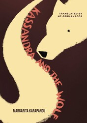Margarita Karapanu – Kassandra és a farkas egy modern görög regény, amely egy fiatal nő, Kassandra történetét meséli el. A mű egy erőteljes, női perspektívát kínál a görög mitológiai hősnő, Kassandra, és a női szerepek társadalmi elvárásai között feszülő ellentétekre.
Stephen Fry – Mítosz
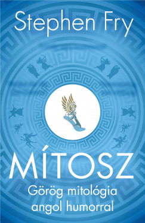Stephen Fry Mítosz című könyve egy friss, szórakoztató és könnyen érthető újragondolása a görög mitológiának. Fry lebilincselő stílusában meséli el az istenek, hősök és titánok történetét, bemutatva a mítoszok világát a mai olvasók számára. A mű nemcsak történelmi érdekességeket, hanem humoros és szellemes megközelítést is kínál, így ideális bevezetés a görög mitológia gazdag és izgalmas univerzumába.
Madeline Miller – Kirké

Madeline Miller Kirké című regénye a görög mitológia egyik legismertebb női alakját, Kirkét állítja középpontba. A történet egy új, női szemszögből meséli el az istennő életét, aki az Odüsszeusz történetéből ismert. A könyv a női erő, a magány és a hatalom kérdéseit vizsgálja, miközben varázslatos világba repít bennünket, ahol a hagyományos mítoszokat modern, érzékeny olvasattal és erőteljes karakterábrázolással találkozhatunk.
Madeline Miller – Akhilleusz dala
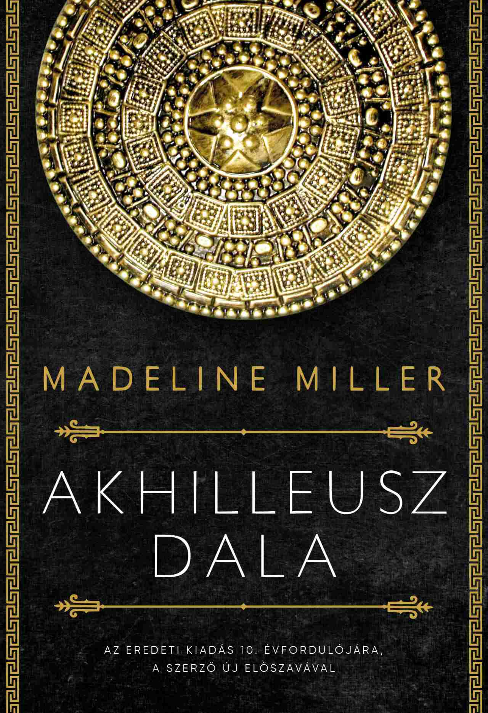Madeline Miller Akhilleusz dala egy másik híres regénye, amely a görög mitológia egyik legnagyobb hősének, Akhilleusznak és Patroklosz barátságának, valamint szerelmének történetét meséli el. A mű az Iliász és a görög mitológia klasszikus elemeit újraértelmezi, miközben a szeretet, a háború, a sors és az emberi gyengeségek örök témáit feszegeti. Miller érzelmekkel teli és mélyreható története egy olyan Akhilleuszt mutat be, aki nemcsak hős, hanem ember is.
Natalie Haynes – A Thousand Ships
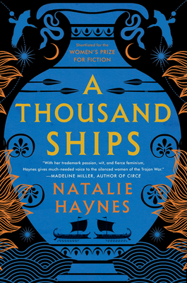Natalie Haynes A Thousand Ships című regénye a trójai háború eseményeit női szereplők szemszögéből mutatja be. A regény számos híres női karakter, mint Hekabé, Briseisz és Helen történetét szövi egybe, és a háború hatását a női perspektívából vizsgálja. Haynes műve a mítoszok mellett a nők szerepét és hangját helyezi középpontba, miközben felfedezi, hogyan élik meg a háború borzalmait azok, akik nem csupán áldozatai, hanem aktív résztvevői is voltak.
Rick Riordan – Percy Jackson és az olimposziak
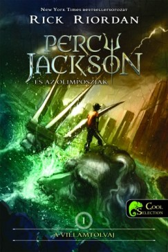Rick Riordan – Percy Jackson és az olimposziak Percy Jackson és az olimposziak Rick Riordan népszerű ifjúsági sorozata, amely egy fiatal fiú, Percy Jackson kalandjait követi, aki megtudja, hogy ő a görög istenek egyik utóda. Riordan könnyed és humoros stílusban meséli el a görög mitológia elemeit, miközben fiatal olvasók számára izgalmas és szórakoztató módon ismerteti meg őket az olimposzi istenekkel, hősökkel és kalandjaikkal.
Görög filozofia és gondolkodás
Görög történelem és kultúra
Kortárs görög irodalom
Görög mitológia és fantasy
Klasszikus görög irodalom

Szophoklész – Antigoné
Antigoné, aki szembeszáll a királyi törvénnyel, hogy testvérét méltó módon eltemethesse, a családi kötelesség és az állami törvények közötti konfliktust testesíti meg.
Homérosz - Illiász
A trójai háború hősei, istenei és szenvedései elevenednek meg ebben az időtlen eposzban. Akhilleusz haragja és Hektór bátorsága örökre meghatározták, mit jelent hőssé válni. Az Iliász nemcsak a háborúról szól – hanem az emberi lélek küzdelmeiről is.
Homérosz - Odüsszeai
A Trója ostroma után tíz évet bolyongó Odüsszeusz története a világirodalom egyik legnagyobb hőseposza. Homérosz klasszikus művében a ravasz ithakai király hazafelé tart, de útját istenek haragja, szörnyetegek, csábító nymphák és varázslatok szegélyezik.
Euripidész – Médeia
Euripidész híres tragédiája, amelyben a boszú és a csalódás ereje elpusztítja a boldogságot, amelyet Medeia és Jázón együtt építettek. A mű elgondolkodtat a szerelem, a becsület és az igazság kérdéseiről, miközben a fájdalom és az elhagyatottság szörnyű következményeit mutatja be.
Aiszkhülosz – Oreszteia
Az Oreszteia trilógiájában Aiszkhülosz a családi bosszú örök körforgását és az igazságosság keresését tárja elénk. Oresztész, az elátkozott család sarja, aki apja meggyilkolásáért áll bosszút, miközben az istenek és a társadalom igazságérzete összecsap. Az Oreszteia az emberi és isteni törvények határvonalát kutatja.
Görög filozófia és gondolkodás
Platon - Állam
Platón híres műve az ideális állam és az igazságos társadalom elméletét tárgyalja. Szókratész dialógusai révén Platón olyan filozófiai alapelveket vizsgál, mint az igazság, a tudás és a politikai vezetés. Az Állam nem csupán egy politikai utópia, hanem az egyéni erkölcs és a közjó kapcsolatát is elemzi.
Arisztotelész – Nikomakhoszi etika
Arisztotelész etikai műve az erények és a boldog élet elérésének kérdését feszegeti. A Nikomakhoszi etika arra keresi a választ, hogyan élhetünk jó életet, és hogyan érhetjük el a legnagyobb boldogságot az erények gyakorlásával. A filozófia alapműve, amely az emberi cselekedetek morális alapjait vizsgálja.
Epiktétosz – Kézikönyvecske
Epiktétosz Kézikönyvecskéje a stoikus filozófia gyakorlati útmutatója, amely a belső nyugalom és a külső körülményekkel való harmónia elérésére tanít. Az önuralom, az élet elfogadása és a sors iránti tisztelet az alapelvek, amelyek segítenek a boldog és tartalmas élet megélésében.
Szeneka – Az élet rövidségéről
Szeneka híres értekezésében az élet rövidségét és annak helyes kihasználását tárgyalja. A Az élet rövidségéről arra figyelmeztet, hogy az emberek túl sok időt pazarolnak haszontalan dolgokra, és arra ösztönöz, hogy minden pillanatot tudatosan éljünk meg, hogy a valódi értékekre összpontosíthassunk.
Marcus Aurelius – Elmélkedések
Marcus Aurelius Elmélkedései a római császár személyes naplójának részletei, melyekben a stoikus filozófia elveit alkalmazza mindennapi életére. A mű segít megérteni a belső béke és erő megtalálásának titkát, miközben a császár a filozófia útján keres válaszokat az élet kihívásaira és a személyes fejlődésre.
Görög történelem és kultúra
Hérodotosz – A történodás
Hérodotosz, az "történetírás atyja", az A történetírás című művében először próbálja meg összefoglalni és rendszerezni a világ eseményeit, különös figyelmet fordítva a háborúkra és azok emberi vonatkozásaira. A mű nemcsak egy-egy történelmi eseményt örökít meg, hanem bemutatja a különböző népek szokásait, kultúráit és hitvilágát, így alapvető fontosságú mű a történelemkutatás számára.
Thuküdidész – A peloponnészoszi háború története
Thuküdidész műve az ókori Görögország egyik legfontosabb történelmi feljegyzése, amely részletesen bemutatja a Peloponnészoszi háború küzdelmeit, okait és következményeit. A mű rendkívüli pontossággal és mély filozófiai elemzéssel dolgozza fel a háborút, és arra összpontosít, hogy miként formálják a politikai és emberi döntések a történelem menetét.
Edith Hall – Introducing the Ancient Greeks
Edith Hall könyve kiváló bevezető az ókori görög világba, amely megismerteti az olvasót a görög kultúra, filozófia, vallás és társadalom alapjaival. A mű átfogó képet ad a görög civilizáció fontosságáról és hatásáról, valamint betekintést nyújt abba, hogy miért tekintjük őket az európai kultúra alapítóiként.
Mary Beard – SPQR
Mary Beard SPQR című műve a római köztársaság és a birodalom történelmét tárgyalja, de az ókori görög világra is kiható jelentősége van, mivel a rómaiak erőteljesen építettek a görög kultúrára. Beard bemutatja a római politika, társadalom és kultúra fejlődését, és azt, hogy a görög hatások hogyan formálták a római világot. Az olvasó megismerheti a római civilizáció különböző aspektusait és azt, hogyan lett a Római Birodalom a görög örökség örököse.
Tom Holland – Persian Fire
Persian Fire a görög-perzsa háborúk történetét tárgyalja, amely kulcsfontosságú pillanata volt az ókori történelemnek. Tom Holland izgalmas és részletes írása a két civilizáció összecsapásának eseményeit és annak hosszú távú következményeit vizsgálja. A mű nemcsak a háborúkat és csatákat mutatja be, hanem azok kulturális, politikai és katonai hatásait is, miközben betekintést ad a görög és perzsa világok különbözőségeibe.
Kortárs görög irodalom
Nikosz Kazantzakisz – Zorbász, a görög
Kazantzakisz világhírű regénye, Zorbász, a görög egy különc, életigenlő férfi, Zorbász történetét meséli el, aki mindenben a szabadságot és az élet örömeit keresi. A mű a görög lélek mélységeit és szépségét tárja elénk, miközben filozófiai kérdéseket is felvet az emberi sorsról, boldogságról és kiteljesedésről. Zorbász figurája örök szimbóluma a szabadság vágynak, és az élet igazi élvezetére való törekvésnek.
Nikosz Kazantzakisz – Akinek meg kell halnia
Akinek meg kell halnia Kazantzakisz másik kiemelkedő műve, amely az emberi szenvedés és a halál kérdéseit vizsgálja. A regényben a főszereplő egy kis görög faluban él, ahol szembe kell néznie a családja és a közösség elvárásaival, miközben a saját belső vívódásaival is küzd. A mű mélyen foglalkozik a sors, az élet és a halál filozófiai aspektusaival, miközben egy erőteljes személyes történetet mesél el.
Vassilis Alexakis – Idegen szavak szótára
Vassilis Alexakis Idegen szavak szótára című regénye az identitás, a nyelv és az elidegenedés témáját boncolgatja. A könyv egy fiatal görög férfi történetét meséli el, aki külföldön próbálja megtalálni helyét a világban. A mű egyszerre szórakoztató és filozofikus, miközben a kultúrák közötti különbségek és az otthontalanság érzésének pszichológiai hatásait is tárgyalja.
Petros Markaris – Bérgyilkosok esernyővel
Petros Markaris Bérgyilkosok esernyővel című krimije a modern görög társadalom bűnügyi világát tárja elénk. A műben a híres detektív, Kostas Charitos nyomoz a főváros bűnügyekkel terhelt világában. A könyv izgalmas cselekménye mellett betekintést ad a görög társadalom morális dilemmáiba, miközben mélyebb társadalmi és politikai kérdéseket is feszeget.
Margarita Karapanu – Kassandra és a farkas
Margarita Karapanu – Kassandra és a farkas egy modern görög regény, amely egy fiatal nő, Kassandra történetét meséli el. A mű egy erőteljes, női perspektívát kínál a görög mitológiai hősnő, Kassandra, és a női szerepek társadalmi elvárásai között feszülő ellentétekre.
Görög mitológia és fantasy
Stephen Fry – Mítosz
Stephen Fry Mítosz című könyve egy friss, szórakoztató és könnyen érthető újragondolása a görög mitológiának. Fry lebilincselő stílusában meséli el az istenek, hősök és titánok történetét, bemutatva a mítoszok világát a mai olvasók számára. A mű nemcsak történelmi érdekességeket, hanem humoros és szellemes megközelítést is kínál, így ideális bevezetés a görög mitológia gazdag és izgalmas univerzumába.
Madeline Miller – Kirké
Madeline Miller Kirké című regénye a görög mitológia egyik legismertebb női alakját, Kirkét állítja középpontba. A történet egy új, női szemszögből meséli el az istennő életét, aki az Odüsszeusz történetéből ismert. A könyv a női erő, a magány és a hatalom kérdéseit vizsgálja, miközben varázslatos világba repít bennünket, ahol a hagyományos mítoszokat modern, érzékeny olvasattal és erőteljes karakterábrázolással találkozhatunk.
Madeline Miller – Akhilleusz dala
Madeline Miller Akhilleusz dala egy másik híres regénye, amely a görög mitológia egyik legnagyobb hősének, Akhilleusznak és Patroklosz barátságának, valamint szerelmének történetét meséli el. A mű az Iliász és a görög mitológia klasszikus elemeit újraértelmezi, miközben a szeretet, a háború, a sors és az emberi gyengeségek örök témáit feszegeti. Miller érzelmekkel teli és mélyreható története egy olyan Akhilleuszt mutat be, aki nemcsak hős, hanem ember is.
Natalie Haynes – A Thousand Ships
Natalie Haynes A Thousand Ships című regénye a trójai háború eseményeit női szereplők szemszögéből mutatja be. A regény számos híres női karakter, mint Hekabé, Briseisz és Helen történetét szövi egybe, és a háború hatását a női perspektívából vizsgálja. Haynes műve a mítoszok mellett a nők szerepét és hangját helyezi középpontba, miközben felfedezi, hogyan élik meg a háború borzalmait azok, akik nem csupán áldozatai, hanem aktív résztvevői is voltak.
Rick Riordan – Percy Jackson és az olimposziak
Rick Riordan – Percy Jackson és az olimposziak Percy Jackson és az olimposziak Rick Riordan népszerű ifjúsági sorozata, amely egy fiatal fiú, Percy Jackson kalandjait követi, aki megtudja, hogy ő a görög istenek egyik utóda. Riordan könnyed és humoros stílusban meséli el a görög mitológia elemeit, miközben fiatal olvasók számára izgalmas és szórakoztató módon ismerteti meg őket az olimposzi istenekkel, hősökkel és kalandjaikkal.